Медведь и GTA: 8 идей ролика — выбери
Медведь — это «медвежий рынок». В каждой идее он сносит новую игру. Все кадры нарисованы бесплатно. Герои и обложки похожи на настоящие, логотипов игры и издателя нет. Выбери 1–2 идеи — сделаем ролики, когда откроется лимит Gemini.
- Ролик — «Картонные герои падают домино» (3). Он ровно про пост: годы падают по очереди.
- Ролик для пересылки — «Камера наблюдения» (2). Выглядит как правда.
- Простой и сильный — «Стенд в ночном магазине» (1). То, что ты описал.
1 · Ночной магазин: медведь сносит стенд новой игры
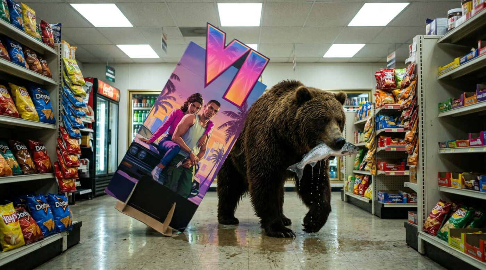
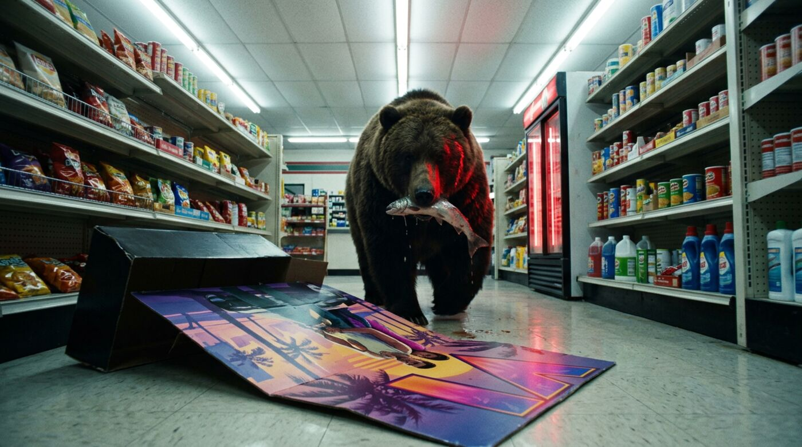
Магазин у дома в 3 ночи, белые лампы. Посреди прохода — картонный стенд новой игры: пара героев, неон, пальмы, большая «VI». Медведь с лососем проходит мимо и плечом валит стенд.
0–2 с медведь входит в кадр, с рыбы капает. 2–4 с задевает стенд, тот кренится. 4–6 с стенд падает плашмя, хлопок, медведь даже не оборачивается. Конец на упавшей «VI».
Самый прямой: «вышла новая игра — пришёл медвежий рынок». На полках видны настоящие марки чипсов и колы — в видео попросим без них.
2 · Кадр с камеры наблюдения
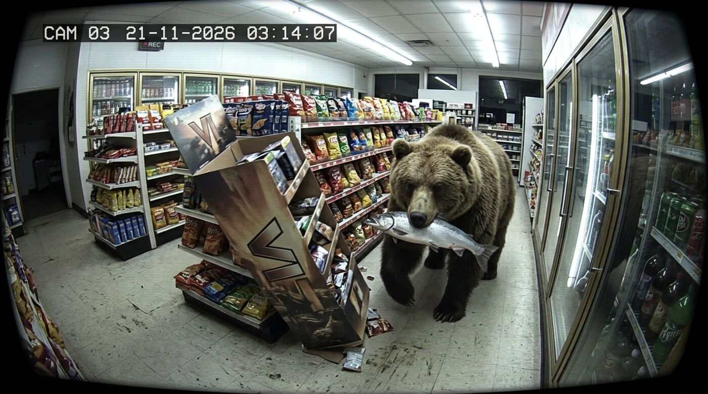
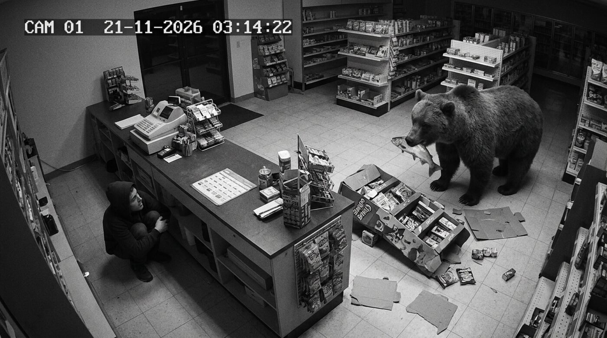
Запись камеры магазина: вид сверху из угла, рыбий глаз, шум, в углу время «CAM 03 21-11-2026 03:14». Медведь с рыбой идёт по проходу и роняет стенд «VI». Второй вариант — чёрно-белый, кассир прячется за стойкой.
Ролик как настоящая запись: дёрганые кадры, время в углу тикает, медведь заходит, сносит стенд и уходит. Без музыки, только глухой звук камеры.
Выглядит как «это правда случилось» — такое пересылают. Почти не требует красоты, Gemini делает такие кадры хорошо.
3 · Картонные герои всех лет падают домино
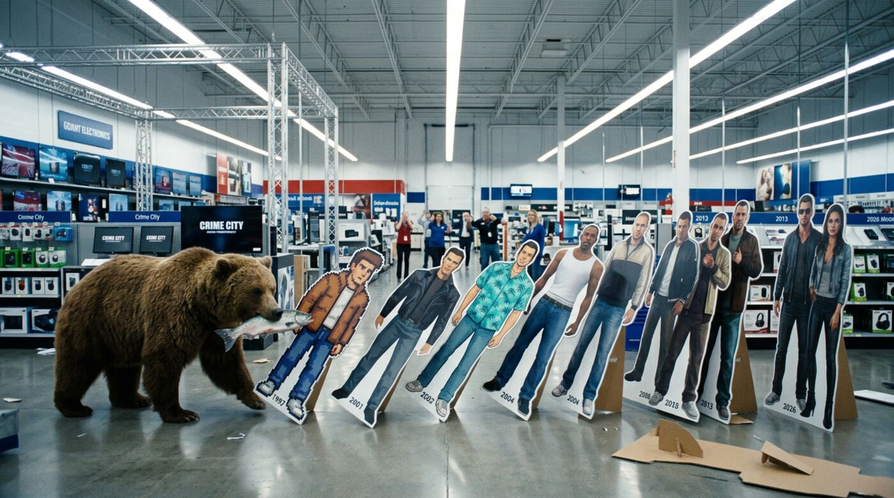
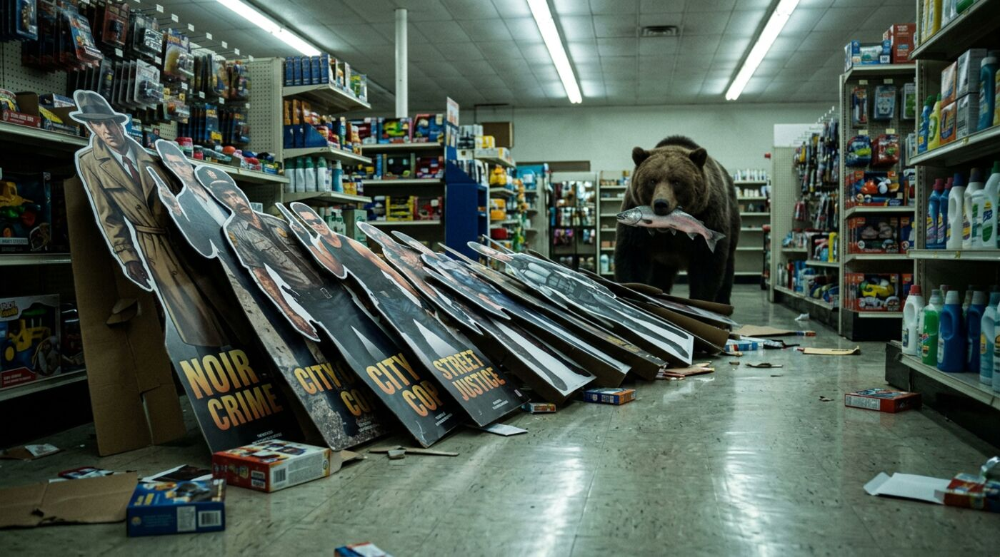
Большой магазин техники, в ряд стоят картонные фигуры героев игры всех лет — от пиксельного 1997 до пары 2026, похожи на настоящих. Медведь задевает первую — и все валятся одна за другой.
0–2 с ряд фигур с годами. 2–3 с медведь задевает 1997. 3–7 с фигуры падают домино по годам, щёлк-щёлк-щёлк, последней падает пара 2026. Конец — медведь смотрит в камеру.
Лучше всех передаёт мысль поста: «каждая часть — свой кризис», годы падают по очереди.
4 · Полка с играми всех лет — лапа смахивает ряд
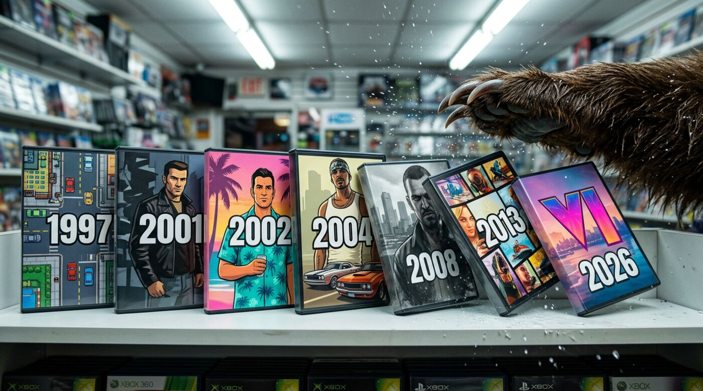
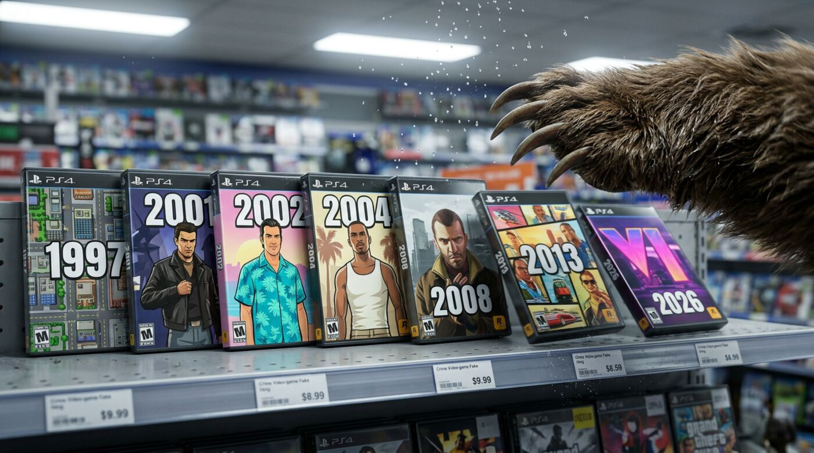
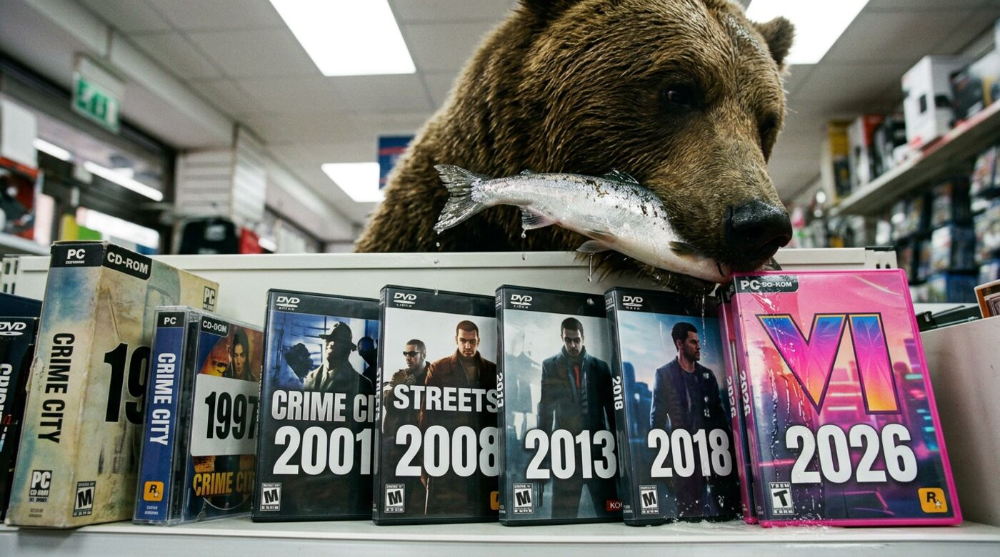
Полка магазина игр: семь коробок с обложками в духе каждой части и годами 1997–2026. Огромная лапа медведя входит сбоку, с неё летят капли, и смахивает весь ряд.
Почти как ролик со столом, но в магазине и крупнее: 0–3 с медведь нюхает коробки, капает, 3–5 с одним махом сносит ряд, коробки летят на камеру. Конец — пустая мокрая полка.
Первый кадр — переделанный, без значков консоли и рейтингов. На нижней полке на заднем плане видны надписи Xbox — уберём кадрированием или промптом.
5 · Медвежий рынок сносит праздник релиза
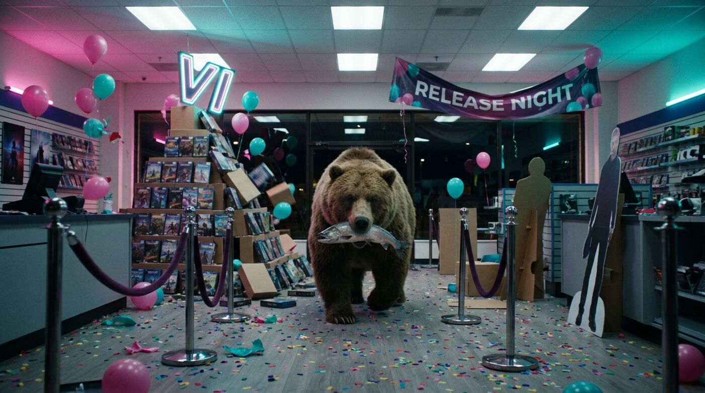
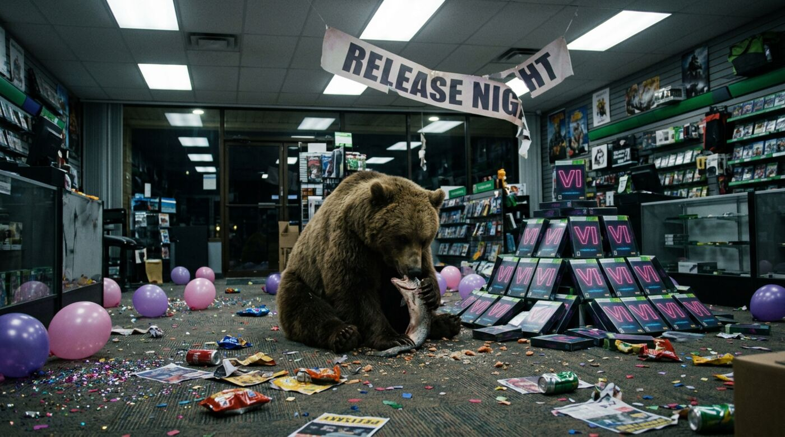
Магазин украшен к ночному старту продаж: шарики, конфетти, ограждение для очереди, баннер «RELEASE NIGHT», пирамида коробок «VI». Медведь идёт прямо сквозь праздник. Второй кадр — после: шарики сдулись, медведь сидит в бардаке и ест рыбу.
0–3 с праздник, шарики. 3–6 с медведь проходит, шарики лопаются, пирамида коробок рушится. 6–8 с баннер падает, медведь садится есть рыбу посреди обломков.
Самая «медийная» метафора: ажиотаж релиза против медвежьего рынка.
6 · Кассир замер, медведь у стенда
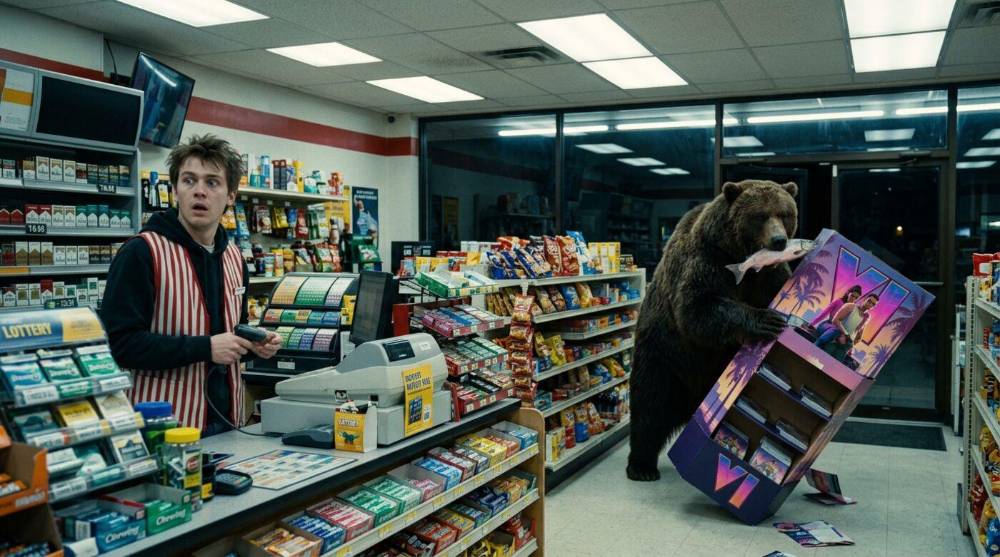
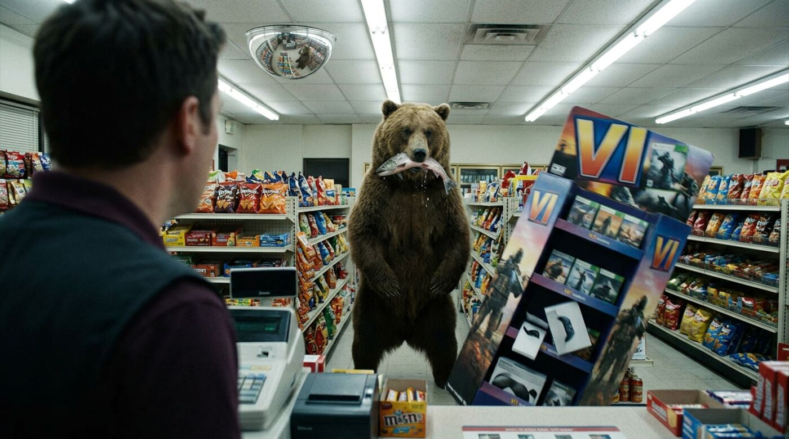
Ночной кассир в полосатой форме застыл со сканером в руке, а у входа медведь с лососем валит стенд «VI». Второй вариант — из-за плеча кассира: медведь стоит на задних лапах.
Человеческая реакция: кассир медленно поднимает глаза, медведь роняет стенд, кассир молча кладёт сканер. Смешно за счёт лица.
Хорош для рилса: есть лицо и эмоция.
7 · С улицы, через витрину
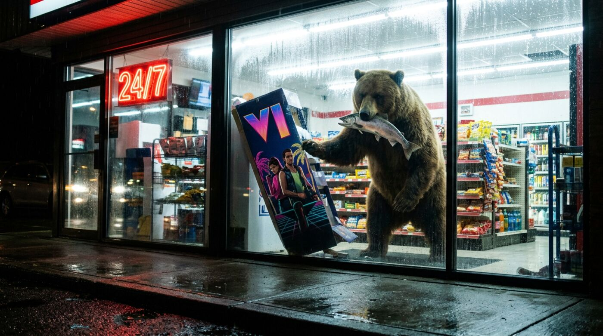
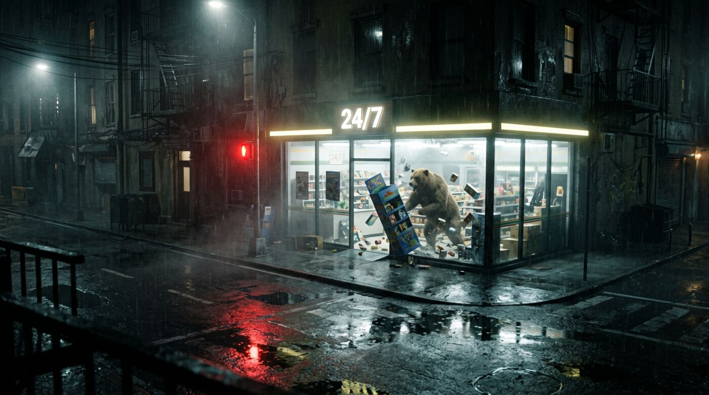
Мокрая ночная улица, витрина магазина «24/7» светится белым. За стеклом медведь толкает стенд игры. Второй кадр — общий план квартала, красный светофор в лужах.
Камера медленно подъезжает с улицы к витрине, в отражениях проезжают машины, за стеклом медведь сносит стенд — глухой удар через стекло.
Самый «киношный» и атмосферный; хорош как обложка поста.
8 · В стиле самой игры
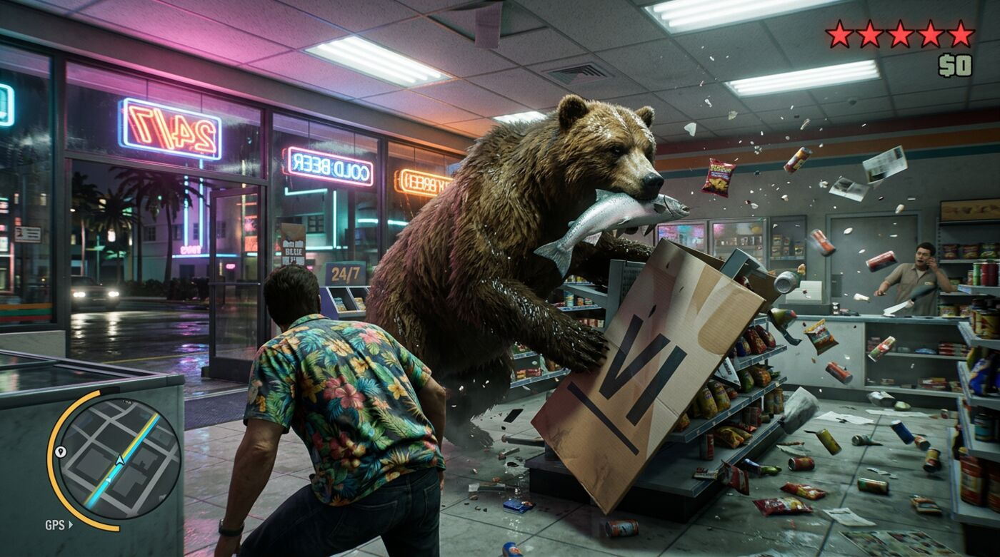
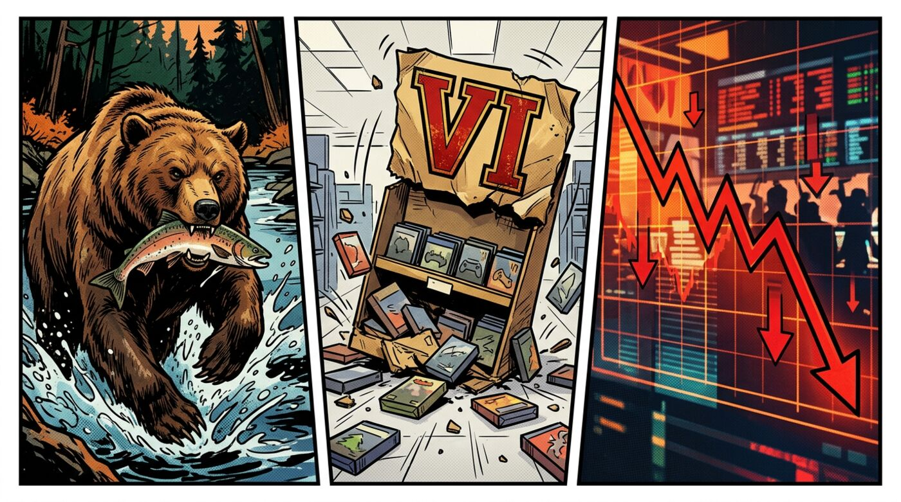
Кадр как из игры: неоновый магазин 24/7, медведь громит его, разлетаются товары и стенд «VI», в углу 5 красных звёзд розыска и «$0». Второй — обложка-комикс из трёх рамок: медведь с рыбой, разбитый стенд, падающий красный график.
Игровой ролик: медведь врывается, звёзды розыска загораются одна за другой, деньги в углу падают до нуля.
Связка с роликами «Поколения» и «Пузырь» — одна игровая серия.
Уже готово: медведь у стола с дисками
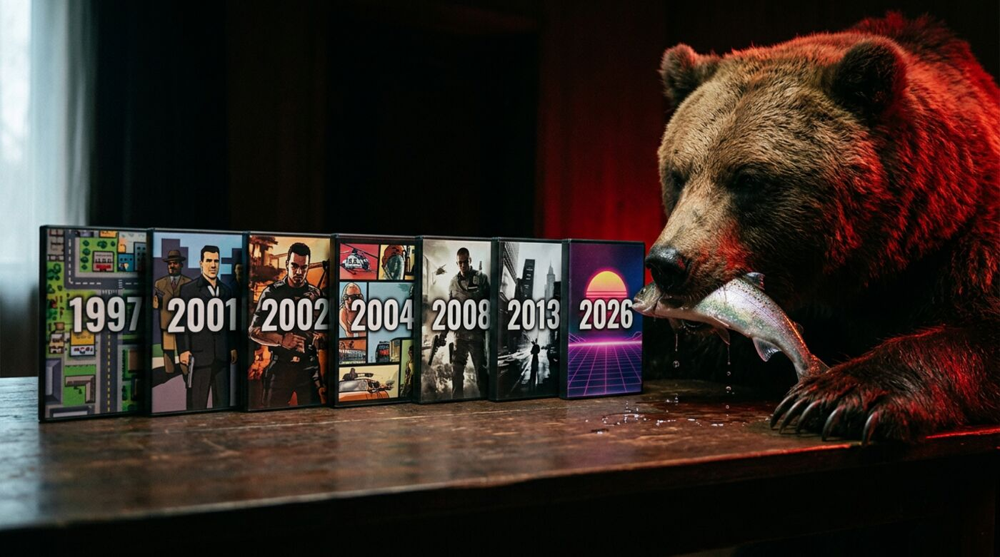
Этот кадр и задание готовы с вечера. Уйдёт в Gemini, как только откроется лимит.
Собрано 21.11.2026 ночью · 17 кадров нарисованы бесплатно · видео не запускали.